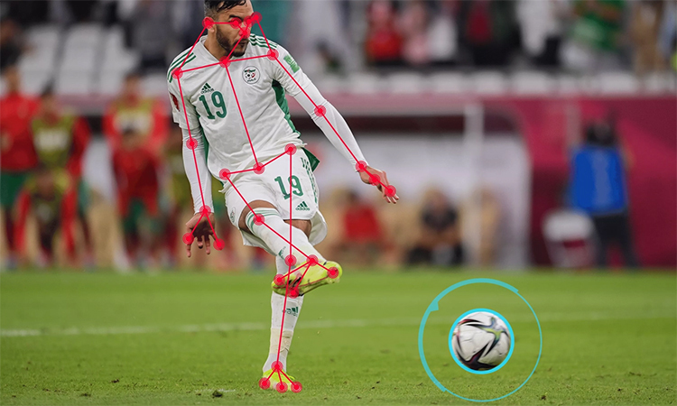
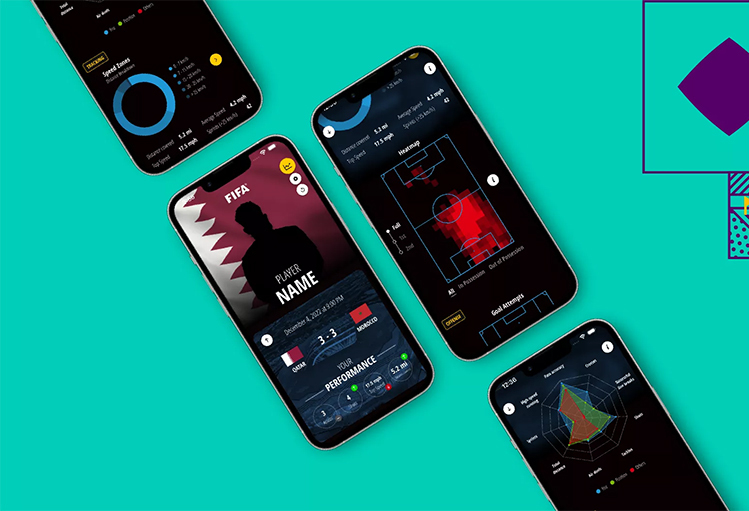
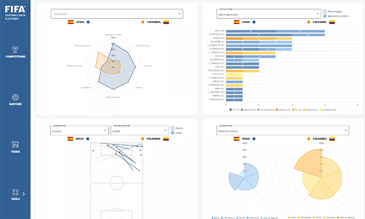
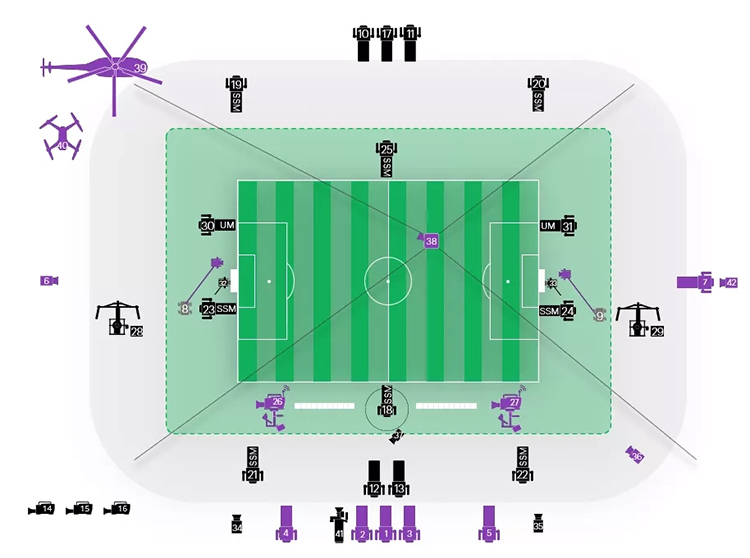

Ngoài Goal-line, VAR được nâng cấp, World Cup 2022 còn lần đầu áp dụng công nghệ bắt việt vị bán tự động, ứng dụng theo dõi hiệu suất cầu thủ.
Công nghệ bắt việt vị bán tự động
FIFA lần đầu giới thiệu công nghệ việt vị bán tự động năm 2019 và thử nghiệm thành công tại Arab Cup ở Qatar năm ngoái cũng như FIFA Club World Cup tại UAE đầu năm. Đây cũng là công nghệ mới được quan tâm nhất khi áp dụng tại World Cup 2022.
Giải pháp này dựa trên 12 camera chuyên dụng gắn dưới mái các sân vận động và được đồng bộ hóa. Dữ liệu theo dõi quang học xem xét 29 điểm dữ liệu di chuyển của từng cầu thủ và vị trí của bóng, được phân tích ở tốc độ 50 lần mỗi giây.

Công nghệ bắt việt vị tự động theo dõi vị trí trái bóng và 29 điểm dữ liệu của từng cầu thủ để xác định thời điểm chuyền và vị trí.
Trái bóng được sử dụng tại World Cup 2022, Al Rihla, có một bộ cảm biến để truyền dữ liệu 500 lần mỗi giây đến phòng VAR. Hai công nghệ này kết hợp để theo dõi di chuyển của từng cầu thủ và "thời điểm bóng rời chân" chính xác trong thời gian thực bằng cách sử dụng trí thông minh nhân tạo.
VAR sẽ nhận được cảnh báo nếu hệ thống phát hiện việt vị, từ đó xem lại tình huống theo cách thủ công rồi tư vấn cho trọng tài chính. FIFA ước tính công nghệ sẽ giúp cắt giảm thời gian đưa ra quyết định từ mức trung bình 70 giây bằng việc xem lại băng hình ngoài đường biên hiện tại xuống còn từ 20 đến 25 giây.
Ứng dụng thông tin hiệu suất cầu thủ FIFA Player

Giao diện ứng dụng FIFA Player.
Ứng dụng FIFA Player do FIFA phát triển và hợp tác với FIFPRO, đại diện toàn cầu của các cầu thủ bóng đá chuyên nghiệp. Phần mềm cung cấp dữ liệu chi tiết về hiệu suất của từng người chơi sau mỗi trận đấu và lần đầu được áp dụng tại World Cup 2022.
Mỗi cầu thủ sẽ có các dữ liệu về thể chất, được thu thập thông qua các cảm biến, nhiều camera độ chính xác cao lắp đặt quanh sân. Các thông số có thể kể đến bản đồ nhiệt, thời gian di chuyển tốc độ trên 25 km/giờ, tốc độ tối đa. Ngoài ra, người xem cũng có thể nhận biết số đường chuyền, số lần tạo cơ hội, khả năng gây áp lực khi mất bóng của từng cầu thủ,
Hệ sinh thái dữ liệu bóng đá

Sơ đồ các thông tin thời gian thực của trận đấu gồm cả sự kiện, vị trí.
Dữ liệu thống kê, tổng hợp trước, trong và sau trận đấu luôn đóng vai trò quan trọng trong bóng đá hiện đại. Các đội, phương tiện truyền thông, đài truyền hình và ban tổ chức cần dữ liệu này dưới dạng theo sự kiện hoặc theo vị trí. Theo FIFA, việc ra mắt hệ sinh thái dữ liệu do tổ chức này kiểm soát sẽ giúp chuẩn hóa nội dung, đem đến tính nhất quán, chính xác và đảm bảo quy định bảo vệ dữ liệu chung của Liên minh châu Âu.
Dữ liệu do FIFA cung cấp trên hệ sinh thái được thu trực tiếp thông qua mọi hành động, sự kiện trên sân bao gồm đường chuyền, sút, thay người, quyết định của trọng tài trận đấu. Với dữ liệu vị trí của tất cả các cầu thủ, trọng tài và bóng, một hệ thống theo dõi quang học được lắp đặt ở cả 8 sân vận động của World Cup để ghi lại nhiều lần mỗi giây, chính xác đến từng cm.
Trước đó, hệ sinh thái dữ liệu bóng đá đã được FIFA thử nghiệm tại các giải đấu như Arab Cup 2021 và FIFA Club World Cup năm 2019 và 2021.
Xác định bàn thắng tự động Goal-line
Goal-line bắt đầu được áp dụng tại World Cup 2014 và liên tục được nâng cấp qua các năm tổ chức. Tại Qatar năm nay, mỗi hệ thống trên 8 sân vận động sử dụng dữ liệu từ 14 camera tốc độ cao gắn dưới sân hoặc dưới mái che. Các dữ liệu được sử dụng để tạo hoạt cảnh 3D nhằm hiển thị trực quan cho người xem trên TV hoặc trong sân vận động. Đây cũng được coi là công nghệ ít gây tranh cãi nhất, có tính chính xác cao nhất kể từ khi được áp dụng.
Công nghệ hỗ trợ trọng tài bằng video (VAR)

Sơ đồ bố trí máy quay tại các sân vận động ở World Cup 2022.
VAR lần đầu được triển khai tại World Cup 2018 nhưng cũng là một trong những tranh cãi lớn nhất ở giải đấu. Công nghệ giúp trọng tài đưa ra quyết định chính xác hoặc sửa sai thông qua video quay chậm. Tuy nhiên, cách can thiệp của trọng tài trong nhiều tình huống, bỏ qua lỗi hay xác định một tình huống nhạy cảm vẫn là chủ đề tốn nhiều giấy mực của báo giới.
Tại Qatar năm nay, cả 8 sân vận động sẽ có tối thiểu 42 camera và tổ trọng tài VAR có quyền truy cập vào tất cả hệ thống. Trong số này có 8 camera hỗ trợ phát lại chuyển động siêu chậm và 4 trong số đó là cực chậm. Một nhóm VAR gồm 8 người bao gồm 4 trọng tài mặc áo xanh và 4 thành viên hỗ trợ.